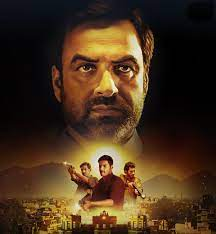

My Top 3 Webseries/Movies :
(click on the photo for IMDb reviews.)

1. Naruto(Anime)
Best and only anime I've watched till now.
2.Yeh Jawaani hai Diwani

"Yeh Jawaani Hai Deewani is a vibrant Bollywood coming-of-age film that beautifully captures the
the essence of friendship, love, and self-discovery.
3. Mirzapur

"Mirzapur is a gripping and intense Indian crime thriller series that delves into the murky world of power, politics
and crime in the heartland of Uttar Pradesh."